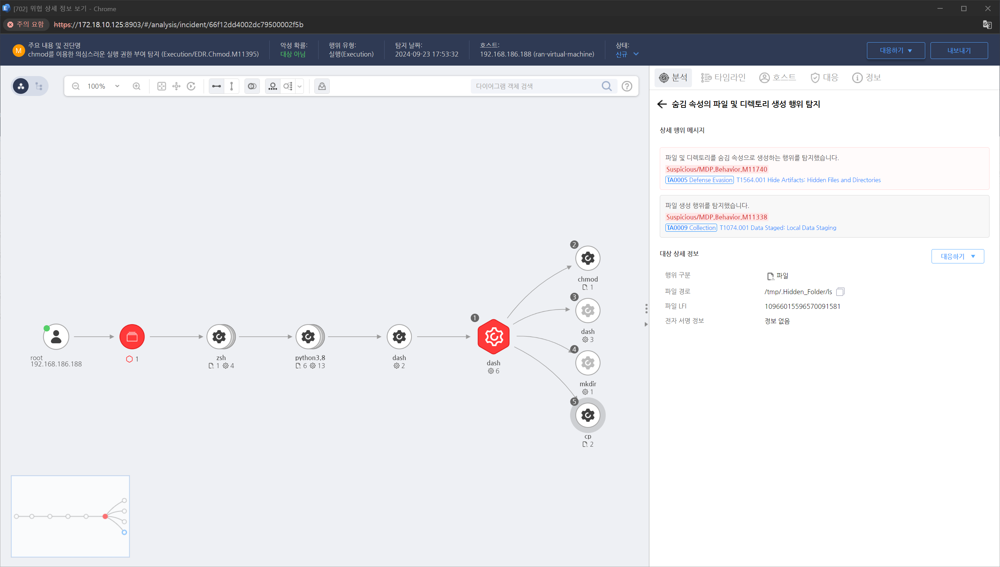

MITRE ATT&CK 액션을 기준으로 대응 방안을 작성
파일 및 디렉토리를 숨김 속성으로 생성하는 행위를 탐지했습니다.

시스템에서 발생하는 권한 변경 이벤트를 로그로 기록하고, 이를 주기적으로 모니터링하여 비정상적인 활동을 탐지합니다. 특히 파일 및 디렉터리의 권한 변경에 대한 로그는 보안 분석에서 중요한 단서가 될 수 있습니다.
비정상적인 파일 권한 변경을 감지하기 위해 이상 탐지 시스템(IDS)을 사용하여 일반적인 권한 변경과 비교해 의심스러운 활동을 탐지합니다.
권한 변경이 악의적인 활동으로 확인될 경우, 침해 대응 계획(IR)을 즉시 실행해야 합니다. 이를 통해 해당 공격자의 접근 권한을 차단하고, 영향받은 파일 및 시스템을 복구합니다.
관리자 또는 사용자에 의한 권한 변경이 정당한지 주기적으로 감사하여 의도치 않은 권한 상승을 예방합니다.
파일 권한 관리
보안 소프트웨어 사용
강력한 인증 및 권한 제어
파일 무결성 검사
Action 실행시 함께 영향을 받는 다른 Techniqes
| ATT&CK |
|---|
| T1564.001 |
| D3FEND |
|---|
| D3-FIM File Integrity Monitoring |
| D3-SCA System Call Analysis |
| D3-PM Platform Monitoring |